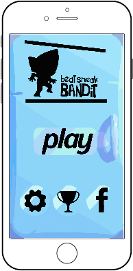
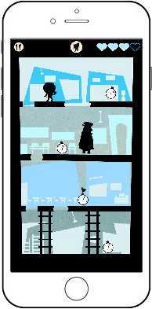

To redesign the game app by using the specified theme given, included the consideration of visual hints of an interface & showing the how the gameplay is work in the game app by using gif.
The theme that i chosen is winter time, so that i using ice as my main theme to redesign the whole game app become a frozen situation. I am using blue as my main color to design my UI element to match the theme.
Main page
Loading page
In game
In game
Pause page
Try again
Clash Royale
In the clash royale ice arena, give me the inspiration of the ice, you can feel the whole enviroment is cold.
The snow represented the ice and it make me think of christmas theme so i have redesign the character in santa look. So that it can be use when is christmas theme as well.

next project